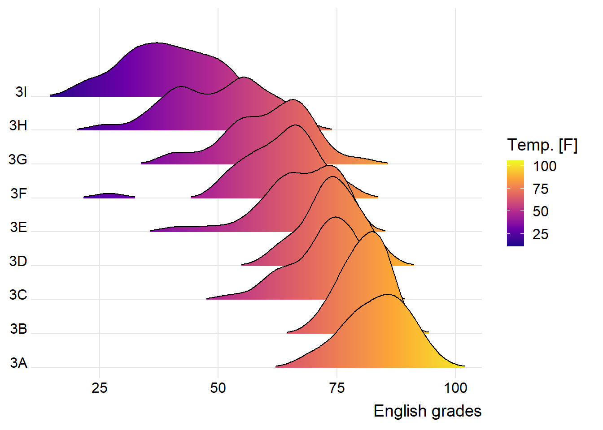
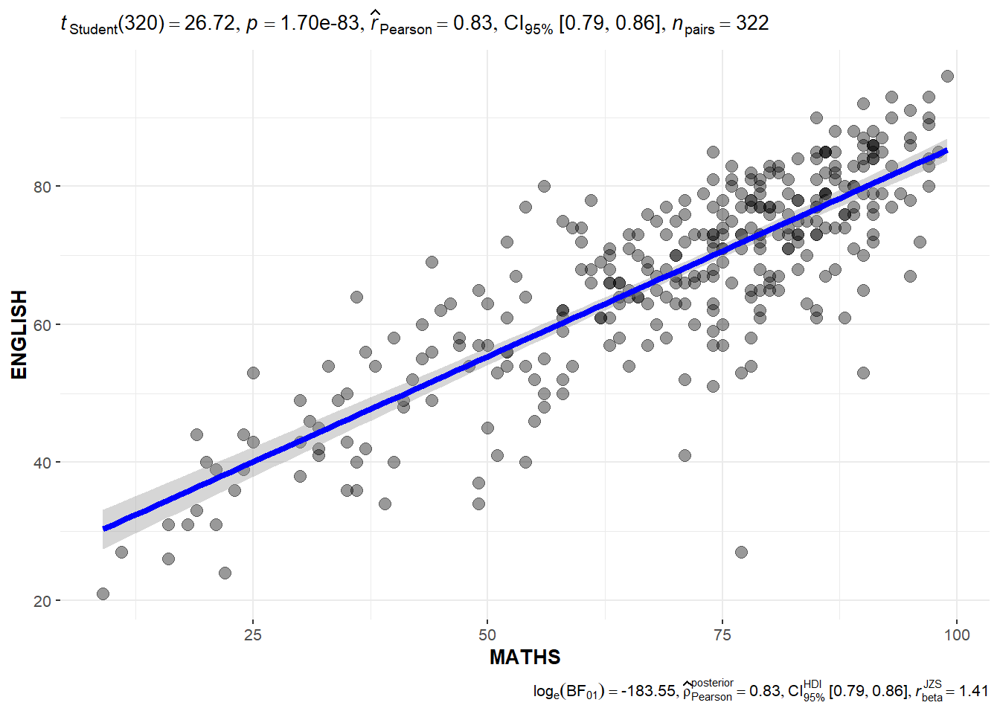
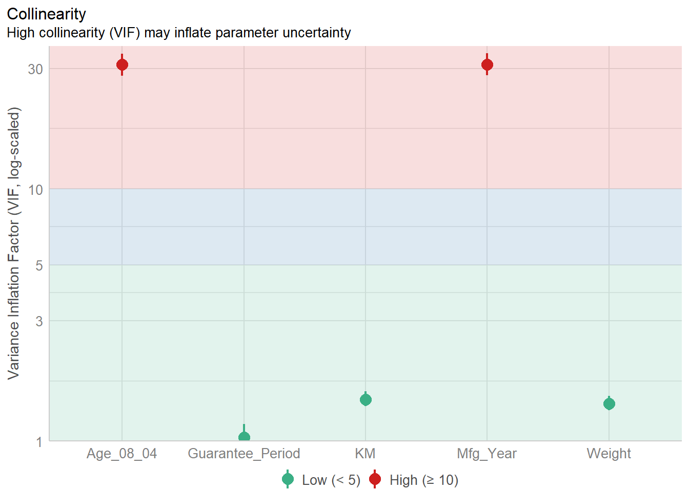

pacman::p_load(ggdist, ggridges, ggthemes,
colorspace, tidyverse)Hands-on_Ex4
Visualizing Distribution
9.1 Learning outcome
Statistical graph methods for visualizing distribution: ridgeline plot and raincloud plot
9.2 Getting Started
9.2.1 Loading the packages
9.2.2 Importing data
exam <- read_csv("data/Exam_data.csv")9.3 Visualizing distribution with ridgeline plot
Ridgeline plot: revealing the distribution of a numeric value for several groups, using histograms or density plot and all aligned to the same horizontal scale and presented with a slight overlap.
More make sense when the number of group to represent is medium to high
It works well when there is a clear pattern in the result, like if there is an obvious ranking in groups
9.3.1 Plotting ridgeline: ggridges method
geom_ridgeline(): takes height values directly to draw the ridgelinegeom_density_ridges(): first estimates data densities and then draws those using ridgelines.
“Show the code”
ggplot(exam,
aes(x = ENGLISH,
y = CLASS)) +
geom_density_ridges(
scale = 3,
rel_min_height = 0.01,
bandwidth = 3.4,
fill = lighten("#7097BB", .3),
color = "white"
) +
scale_x_continuous(
name = "English grades",
expand = c(0, 0)
) +
scale_y_discrete(name = NULL, expand = expansion(add = c(0.2, 2.6))) +
theme_ridges()
9.3.2 Varying fill colors alone the x axis
This effect can be achieved by using either geom_ridgeline_gradient() or geom_density_ridges_gradient()
“Show the code”
ggplot(exam,
aes(x = ENGLISH,
y = CLASS,
fill = stat(x))) +
geom_density_ridges_gradient(
scale = 3,
rel_min_height = 0.01) +
scale_fill_viridis_c(name = "Temp. [F]",
option = "C") +
scale_x_continuous(
name = "English grades",
expand = c(0, 0)
) +
scale_y_discrete(name = NULL, expand = expansion(add = c(0.2, 2.6))) +
theme_ridges()
9.3.3 Mapping the probabilities directly onto color
This can achieved by using fucntion stat_density_ridges().
ggplot(exam,
aes(x = ENGLISH,
y = CLASS,
fill = 0.5 - abs(0.5-stat(ecdf)))) +
stat_density_ridges(geom = "density_ridges_gradient",
calc_ecdf = TRUE) +
scale_fill_viridis_c(name = "Tail probability",
direction = -1) +
theme_ridges()
9.3.4 Ridgeline plots with quantile lines
ggplot(exam,
aes(x = ENGLISH,
y = CLASS,
fill = factor(stat(quantile))
)) +
stat_density_ridges(
geom = "density_ridges_gradient",
calc_ecdf = TRUE,
quantiles = 4,
quantile_lines = TRUE) +
scale_fill_viridis_d(name = "Quartiles") +
theme_ridges()
Quantiles can be defined by using color and percentage
ggplot(exam,
aes(x = ENGLISH,
y = CLASS,
fill = factor(stat(quantile))
)) +
stat_density_ridges(
geom = "density_ridges_gradient",
calc_ecdf = TRUE,
quantiles = c(0.025, 0.975)
) +
scale_fill_manual(
name = "Probability",
values = c("#FF0000A0", "#A0A0A0A0", "#0000FFA0"),
labels = c("(0, 0.025]", "(0.025, 0.975]", "(0.975, 1]")
) +
theme_ridges()
9.4 Visualizing Distribution with Raincloud plot
Raincloud Plot is a data visualisation techniques that produces a half-density to a distribution plot. The rainclould (half-density) plot enhances the traditional box-plot by highlighting multiple moralities.
9.4.1 Plotting a half eye graph
ggplot(exam,
aes(x = RACE,
y = ENGLISH)) +
stat_halfeye(adjust = 0.5,
justification = -0.2,
.width = 0,
point_colour = NA)
9.4.2 Adding the boxplot with geom_boxplot()
ggplot(exam,
aes(x = RACE,
y = ENGLISH)) +
stat_halfeye(adjust = 0.5,
justification = -0.2,
.width = 0,
point_colour = NA) +
geom_boxplot(width = .20,
outlier.shape = NA)
9.4.3 Adding the dot plots with stat_dots()
ggplot(exam,
aes(x = RACE,
y = ENGLISH)) +
stat_halfeye(adjust = 0.5,
justification = -0.2,
.width = 0,
point_colour = NA) +
geom_boxplot(width = .20,
outlier.shape = NA) +
stat_dots(side = "left",
justification = 1.2,
binwidth = .5,
dotsize = 2)
9.4.4 Finishing touch
ggplot(exam,
aes(x = RACE,
y = ENGLISH)) +
stat_halfeye(adjust = 0.5,
justification = -0.2,
.width = 0,
point_colour = NA) +
geom_boxplot(width = .20,
outlier.shape = NA) +
stat_dots(side = "left",
justification = 1.2,
binwidth = .5,
dotsize = 1.5) +
coord_flip() +
theme_economist()
Visual Statistical Analysis
10.1 Learning Outcome
Create visual graphics with rich statistical information
performance package to visualize model diagnostics, and
parameters package to visualize model parameters
10.2 Visual Statistical analysis with ggstatsplot
To provide alternative statistical inference methods by default.
To follow best practices for statistical reporting. For all statistical tests reported in the plots, the default template abides by the APA gold standard for statistical reporting.
10.3 Getting Started
10.3.1 Loading packages
pacman::p_load(ggstatsplot, tidyverse)10.3.2 Importing data
exam <- read_csv("data/Exam_data.csv")10.4 One-Sample test: gghistostats() method
set.seed(1234)
gghistostats(
data = exam,
x = ENGLISH,
type = "bayes",
test.value = 60,
xlab = "English scores"
)
10.3.4 Unpacking the Bayes Factor
A Bayes factor
is the ratio of the likelihood of one particular hypothesis to the likelihood of another. It can be interpreted as a measure of the strength of evidence in favor of one theory among two competing theories.
gives us a way to evaluate the data in favor of a null hypothesis, and to use external information to do so. It tells us what the weight of the evidence is in favor of a given hypothesis.
When we are comparing two hypotheses, H1 (the alternate hypothesis) and H0 (the null hypothesis), the Bayes Factor is often written as B10.
10.3.5 Interpretation of Bayes Factor
A Bayes factor can be any positive number
10.3.6 Two-sample mean test: ggbetweenstats() -Math score by Gender
ggbetweenstats(
data = exam,
x = GENDER,
y = MATHS,
type = "np",
messages = FALSE
)
10.3.7 Oneway ANOVA Test: ggbetweenstats() method- English score by race
ggbetweenstats(
data = exam,
x = RACE,
y = ENGLISH,
type = "p",
mean.ci = TRUE,
pairwise.comparisons = TRUE,
pairwise.display = "s",
p.adjust.method = "fdr",
messages = FALSE
)
"ns" → only non-significant
"s" → only significant
"all" → everything
10.3.7.1 ggbetweenstats - Summary of tests
10.3.8 Significant Test of Correlation: ggscatterstats()- Math score and English score
ggscatterstats(
data = exam,
x = MATHS,
y = ENGLISH,
marginal = FALSE,
)
10.3.9 Significant Test of Association (Depedence) : ggbarstats() methods
# Maths scores is binned into a 4-class variable by using cut().
exam1 <- exam %>%
mutate(MATHS_bins =
cut(MATHS,
breaks = c(0,60,75,85,100))
)
# build a visual for significant test
ggbarstats(exam1,
x = MATHS_bins,
y = GENDER)
10.9 Visualizing models
You will learn how to visualise model diagnostic and model parameters by using parameters package
10.10 Getting started
10.10.1 Loading the package
pacman::p_load(readxl, performance, parameters, see)10.10.2 Importing data
car_resale <- read_xls("data/ToyotaCorolla.xls",
"data")
car_resale# A tibble: 1,436 × 38
Id Model Price Age_08_04 Mfg_Month Mfg_Year KM Quarterly_Tax Weight
<dbl> <chr> <dbl> <dbl> <dbl> <dbl> <dbl> <dbl> <dbl>
1 81 TOYOTA … 18950 25 8 2002 20019 100 1180
2 1 TOYOTA … 13500 23 10 2002 46986 210 1165
3 2 TOYOTA … 13750 23 10 2002 72937 210 1165
4 3 TOYOTA… 13950 24 9 2002 41711 210 1165
5 4 TOYOTA … 14950 26 7 2002 48000 210 1165
6 5 TOYOTA … 13750 30 3 2002 38500 210 1170
7 6 TOYOTA … 12950 32 1 2002 61000 210 1170
8 7 TOYOTA… 16900 27 6 2002 94612 210 1245
9 8 TOYOTA … 18600 30 3 2002 75889 210 1245
10 44 TOYOTA … 16950 27 6 2002 110404 234 1255
# ℹ 1,426 more rows
# ℹ 29 more variables: Guarantee_Period <dbl>, HP_Bin <chr>, CC_bin <chr>,
# Doors <dbl>, Gears <dbl>, Cylinders <dbl>, Fuel_Type <chr>, Color <chr>,
# Met_Color <dbl>, Automatic <dbl>, Mfr_Guarantee <dbl>,
# BOVAG_Guarantee <dbl>, ABS <dbl>, Airbag_1 <dbl>, Airbag_2 <dbl>,
# Airco <dbl>, Automatic_airco <dbl>, Boardcomputer <dbl>, CD_Player <dbl>,
# Central_Lock <dbl>, Powered_Windows <dbl>, Power_Steering <dbl>, …10.11 Multiple Regression Model using lm()
model <- lm(Price ~ Age_08_04 + Mfg_Year + KM +
Weight + Guarantee_Period, data = car_resale)
model
Call:
lm(formula = Price ~ Age_08_04 + Mfg_Year + KM + Weight + Guarantee_Period,
data = car_resale)
Coefficients:
(Intercept) Age_08_04 Mfg_Year KM
-2.637e+06 -1.409e+01 1.315e+03 -2.323e-02
Weight Guarantee_Period
1.903e+01 2.770e+01 10.11.1 Checking for multicolinearity:
check_collinearity(model)# Check for Multicollinearity
Low Correlation
Term VIF VIF 95% CI Increased SE Tolerance Tolerance 95% CI
KM 1.46 [ 1.37, 1.57] 1.21 0.68 [0.64, 0.73]
Weight 1.41 [ 1.32, 1.51] 1.19 0.71 [0.66, 0.76]
Guarantee_Period 1.04 [ 1.01, 1.17] 1.02 0.97 [0.86, 0.99]
High Correlation
Term VIF VIF 95% CI Increased SE Tolerance Tolerance 95% CI
Age_08_04 31.07 [28.08, 34.38] 5.57 0.03 [0.03, 0.04]
Mfg_Year 31.16 [28.16, 34.48] 5.58 0.03 [0.03, 0.04]check_c <- check_collinearity(model)
plot(check_c)
10.11.2 Checking for normality
model1 <- lm(Price ~ Age_08_04 + KM +
Weight + Guarantee_Period, data = car_resale)check_n <- check_normality(model1)plot(check_n)
10.11.3 Checking for homogeneity of variances
check_h <- check_heteroscedasticity(model1)plot(check_h)
10.11.4 Complete check
check_model(model1)
10.12 Visualising Regression Parameters: see methods
plot(parameters(model1))
10.13 Visualising Regression Parameters: ggcoefstats() methods
ggcoefstats(model1,
output = "plot")